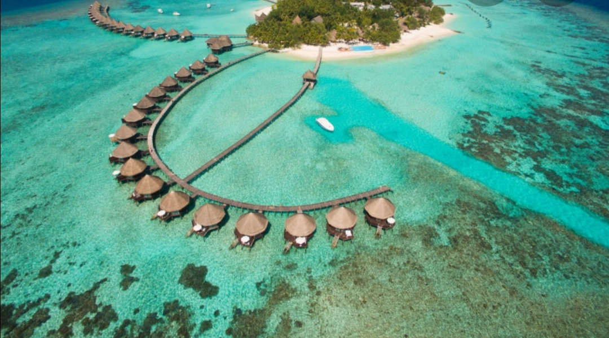
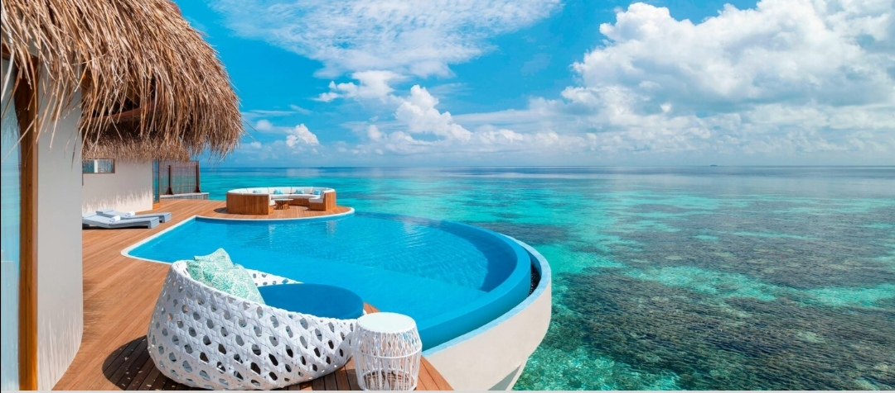
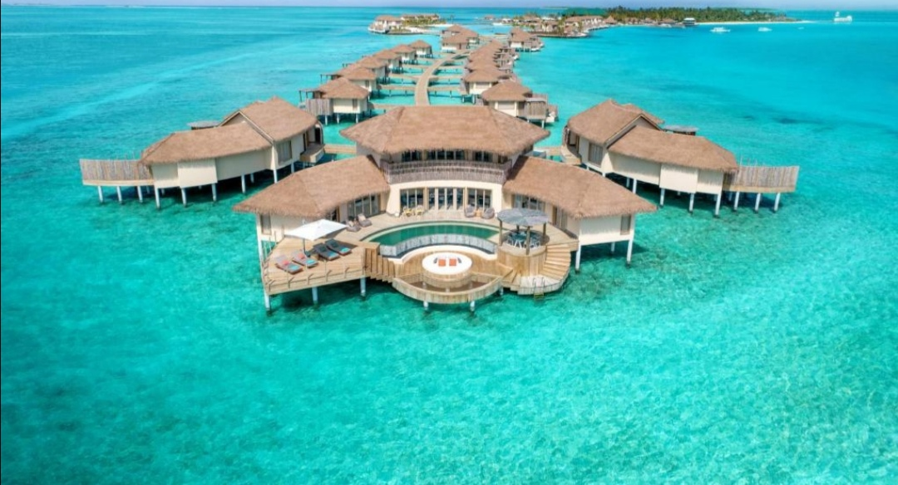
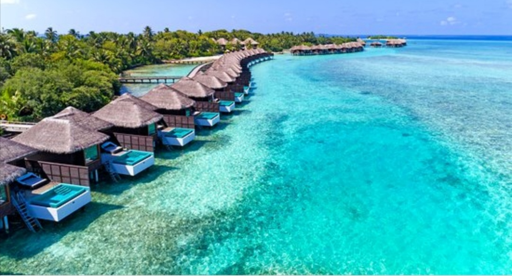
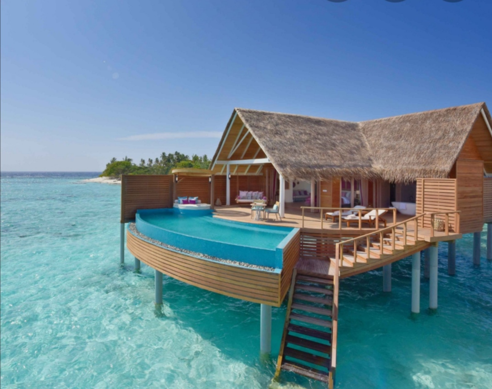
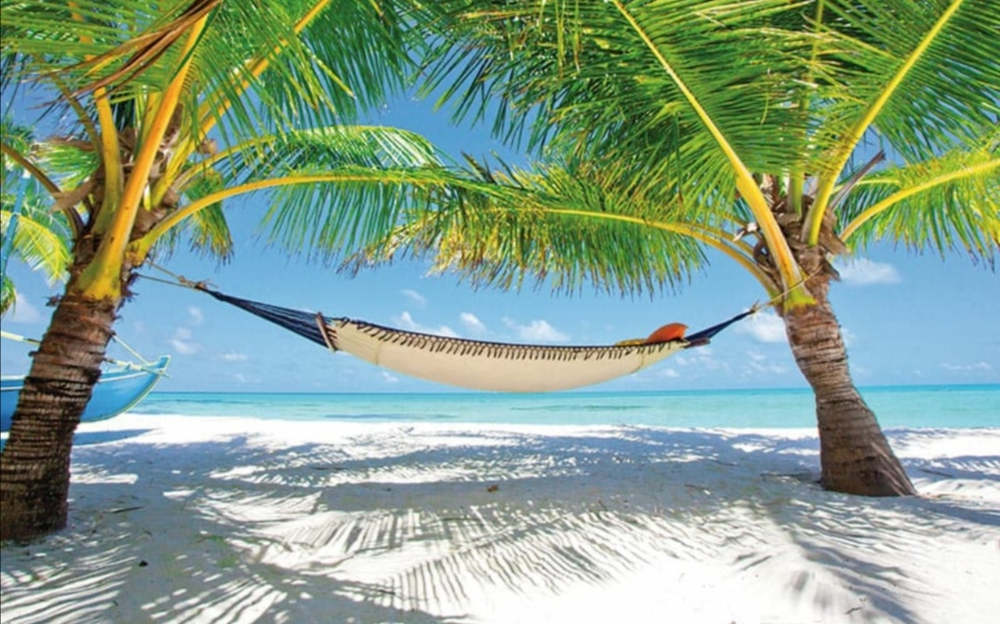
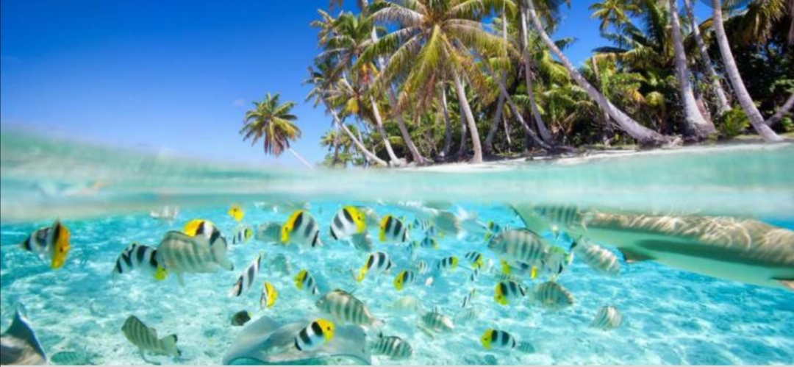
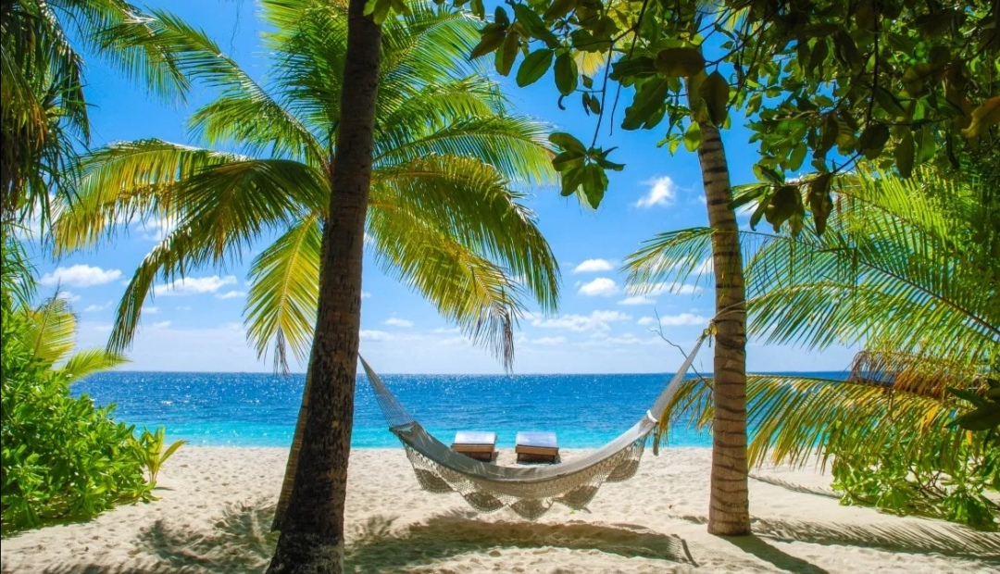
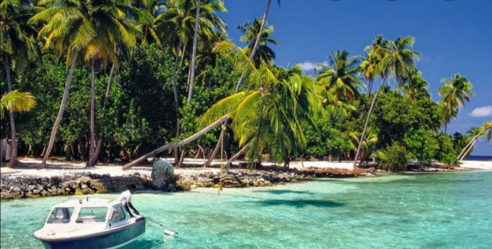
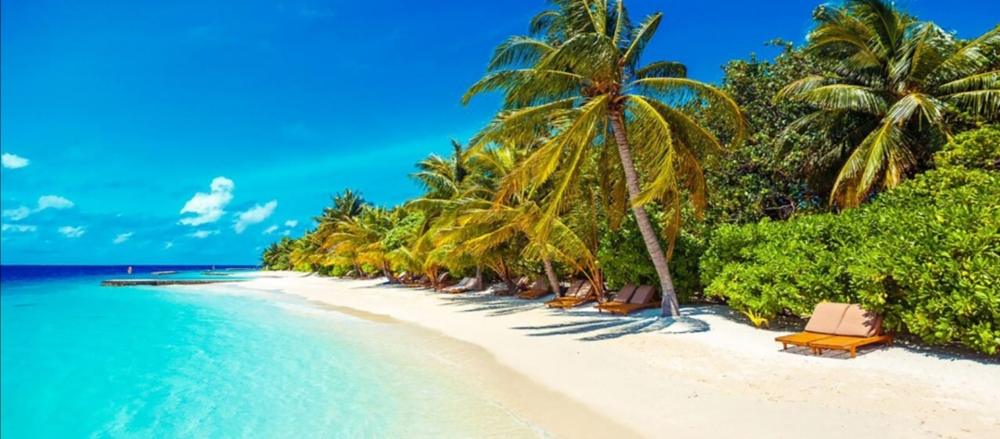

|  |  | l'endroit est particulièrement luxieux, c'est une île paradisiaque. l'eau est turquoise, le sable est fincomme on peut le deviner.les images parlent d'elles même. IL y a plusieurs villes, la plupart ont leur particularité, des habitations sur pilotis différentes et là, on a tout suite envie d'y aller. On y trouve aussi un restaurant sous l'eau, ça doit être vraiment particulier d'être posé dans cet endroit. MALDIVES à la carte vous propose une variété de séjours |
|  |  | sur des îles sélectionnées selon un cahier des chargesprécis et rigoureux. Du coup, vous devez préalablement veiller à ce que l'île choisie corresponde à vos attentes. Votre critère de choix doit surtout se baser sur la décoration, les activités, les restaurant, et tout ce qui pourrait rendre ce voyage inoubliant Ainsi, selon votre cagnotte vous pourrez opter pour des lieux luxueux, moins luxueux ou encore plus luxueux. Qu' attendez vous! |
|  |  |  | ||||||||||||||||||||
|  |  |  |